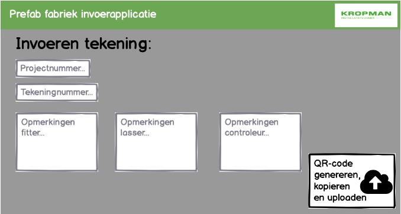
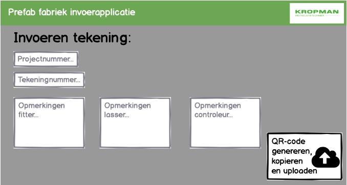

Smart Project
Afgelopen 2,5 maand zijn mijn projectgroep, Jordi, Jesse en ik, aan de slag geweest met een Smart Industry gerelateerde opdracht bij de prefabricage fabriek van Kropman te Nijmegen.
De organisatiedoelstelling van de fabriek is het behalen van een hoog percentage ‘first-time-right’. Dit houdt in dat het product in één keer goed, zonder correcties, wordt gemaakt. Kropman wil door middel van een digitale tool meten hoe hoog het first-time-right percentage ligt, inzicht krijgen in hoeveel werk er onderhanden is en de pijnpunten in kaart brengen. Om vervolgens met de managementinformatie onderbouwde beslissingen te kunnen nemen.
Hieronder wordt op basis van de gebruikte fasering (introductie, definieer, meet, analyse, design, verifieer) de gemaakte stappen en voortgang beschreven. Op de startpagina bij Competenties wordt er dieper ingegaan op de samenwerking.
Vervolgens zijn we in gesprek gegaan met de chef werkplaats het communicatieplan met hem doorgenomen. Hierna heeft hij de werkvloer bij elkaar geroepen en hebben wij ons voorgesteld volgens plan. In de rest van de week hebben we op de werkplaats meegekeken om een eerste beeld te krijgen van wat er binnen de fabriek gedaan wordt. Hierbij hebben we vele vragen gesteld aan de werkvloer, die bereid waren deze te beantwoorden. In de eerste week werd vrijsnel duidelijk dat het proces bij Kropman complex in elkaar zit door de projectmatige manier van werken.
De twee volgende weken hebben we ons bezig gehouden met het definiëren van de hoofd- en deelvragen en de doelstelling van het project.
Om dit voor ons zelf duidelijk te krijgen zijn we opnieuw met Roger gaan zitten om dieper op het onderwerp in te gaan.
Daarnaast zijn we weer op de werkvloer mee gaan lopen. Dit keer met meer oog op de informatieoverdracht, dan enkel het primaire proces.
De verhaalde informatie hebben we verwerkt in het plan van aanpak. Via deze link kun je het plan van aanpak inzien.
In deze periode kwamen we erachter dat we een vrij dynamisch team waren: veel eigen meningen en inzichten. Dit heeft gezorgd voor veel discussies binnen onze groep. Maar we hadden wel de vaardigheid om op een gegeven moment een stop te zetten op de discussie en vervolgens de beste optie eruit te halen. Efficiënt was het wellicht niet, effectief wel.

I
In deze fase hebben we desk- research en field research uitgevoerd. De desk research bestond uit het zoeken naar tools en programma's voor een mogelijke oplossing. Waarbij er is gekeken naar scanopties, databases en applicaties. In de analyse fase zijn we verder ingegaan op de deskresearch.
De field research bestond opnieuw uit het meelopen op de werkvloer. Daarbij hebben we het proces in kaart gebracht met een stroomdiagram. In de fases van het maken van de stroomdiagram, was het mogelijk steeds diepere vragen te kunnen stellen aan de werkvoorbereider, de chef werkplaats en de verdere werkvloer. Het stroomdiagram geeft inzicht in de procesroute van een project/tekening. Hierbij moet in gedachte worden gehouden dat de beheersing van de voortgang een doorlopende lijn is binnen het proces, uitgevoerd door chef werkplaats. Die in letterlijke vorm constant de fabriek doorloopt en met de werkvloer communiceert hoe ver elk project is. Ook wanneer er een fout wordt gemaakt, gaat de stroom terug naar chef werkplaats, die de volgende stap in het proces bepaald. Zoals chef werkplaats het noemt 'een tijdrovende taak' aangezien het veel tussentijdse communicatie vergt.

I
Opvolgend op de vorige fase hebben we de opgehaalde gegevens geanalyseerd, het processchema hierboven is daar een product van. De opgehaalde informatie uit het desk- research hebben geanalyseerd door middel van een keuzematrix, waar de verschillende wensen en eisen worden afgewogen tegen de verschillende opties in scanbare codes en databases. De waarde die op elke eis en wens werd gelegd is overlegd met de opdrachtgever en chef werkplaats.
Aangezien wij allen geen ICT-achtige achtergrond hebben, hebben we voor het invullen van de database keuzematrix naast het internet de mening van de ICT-ers uit de minor klas gevraagd. Achteraf gezien hadden we voor het invullen van dit onderdeel nog hulp kunnen inschakelen van ICT-ers uit het werkveld. Om een echt compleet beeld te kunnen vormen. Uit de matrix nu komt Excel als beste optie voor de database en de QR-code als beste optie voor de scanbare code. De keuzematrix kun je via deze link vinden.
Op basis van het onderzoek zijn we gaan brainstormen over een mogelijke oplossing. We zijn uitgekomen op een vierdelige oplossing bestaande uit: een QR-tekening, een werkvloer-app, een data-invoerapplicatie en een managementinformatie dashboard.
Via de data-invoerapplicatie kan de werkvoorbereider gegevens invoeren zoals: projectnummer, tekeningnummer en eventuele specificaties. Daarbij wordt er een QR-code gegenereerd die op de tekening geplaatst wordt. De achterliggende link is gekoppeld aan de ingevoerde gegevens. Wanneer de QR-code gescand wordt leidt die naar de werkvloer applicatie. Waar de fitter, lasser en controleur kan aangeven of die is begonnen en klaar is met zijn tekening/taak. Daarnaast is er ook een ‘Error’ knop om aan te geven dat er een vertraging is.
Het invullen van deze informatie binnen de applicatie zorgt ervoor dat er een database gevuld wordt, die ingezien kan worden op het dashboard. Vanuit daar kan chef werkplaats en het management de voortgang en het FTR% bijhouden. Hieronder zijn verschillende interfaces van de 4 onderdelen weergegeven.

I I I
I I
Bij invoering van de oplossing zullen er verschillende dingen veranderen in de huidige situatie. De ‘gewenste’ situatie is in onderstaande afbeelding weergegeven. Veranderingen die te zien zijn:

I
In deze fase hebben we een protoype ontwikkeld. Dat als volgend werkt: de QR-code, vanuit een QR-generator, is op een tekening van een onderdeel geprint en wordt door middel van een mobiele telefoon gescand. Na het scannen komt men uit op een Google Form, die via deze link te bezoeken is. Daarbij krijgt een fitter een ander keuzemenu dan de eindcontroleur.
We hebben een fitter, de controleur en de chef werkplaats gevraagd de handeling uit te proberen en gevraagd wat zij qua informatie nog in de applicatie missen. Op basis van hun feedback hebben we een definitief advies kunnen vormen. Deze is/of zal in de laatste week in te zien zijn in de vorm van een business case via deze link.
In de afbeelding wordt het onderzoek en het resultaat samengevat in een poster. Deze poster in combinatie met een instructiefilmpje zal worden laten zien op het seminar op 16 januari 2020.

I
De organisatiedoelstelling van de fabriek is het behalen van een hoog percentage ‘first-time-right’. Dit houdt in dat het product in één keer goed, zonder correcties, wordt gemaakt. Kropman wil door middel van een digitale tool meten hoe hoog het first-time-right percentage ligt, inzicht krijgen in hoeveel werk er onderhanden is en de pijnpunten in kaart brengen. Om vervolgens met de managementinformatie onderbouwde beslissingen te kunnen nemen.
Hieronder wordt op basis van de gebruikte fasering (introductie, definieer, meet, analyse, design, verifieer) de gemaakte stappen en voortgang beschreven. Op de startpagina bij Competenties wordt er dieper ingegaan op de samenwerking.
INTRODUCTIE FASE
Introductie fase: in deze fase hebben we kennis gemaakt met de opdrachtgever en de organisatie.
Kennismaking
Voorafgaande de stageweken zijn we op kennismaking geweest bij de opdrachtgever Roger van Asselt. Tijdens deze kennismaking heeft hij ons verteld over Kropman en zijn we dieper ingegaan op de inhoud van de opdracht. Daarnaast hebben we een rondleiding gekregen binnen de fabriek en afspraken gemaakt over de communicatiewijze en aanwezigheid. We hebben besloten te communiceren via Trello (en outlook voor het in plannen van afspraken) en, wanneer het rooster het toeliet, 2x per week aanwezig te zijn bij Kropman.De eerste week
In de eerste week hebben we als projectgroep gebrainstormed over hoe we het project wilde aanvliegen. Hierbij hebben we besloten om allereerst een communicatieplan te maken tegenover de werkvloer. Dit omdat we van plan waren om binnen de fabriek mee te lopen om het proces te leren begrijpen en wij dus letterlijk 'onze neus in hun zaken gingen steken'. Tijdens het maken van het communicatieplan zijn we tot de conclusie gekomen enkel aan de werkvloer te vertellen: dat we willen meekijken, omdat we het proces willen leren kennen, zodat we een opdracht van school kunnen uitvoeren. Of te wel, niet diep ingaande op de context en het uiteindelijk doel. Dit om weerstand tegen te gaan, aangezien de opdracht het gevoel kan geven dat Kropman hun fouten in kaart wil gaan brengen.Vervolgens zijn we in gesprek gegaan met de chef werkplaats het communicatieplan met hem doorgenomen. Hierna heeft hij de werkvloer bij elkaar geroepen en hebben wij ons voorgesteld volgens plan. In de rest van de week hebben we op de werkplaats meegekeken om een eerste beeld te krijgen van wat er binnen de fabriek gedaan wordt. Hierbij hebben we vele vragen gesteld aan de werkvloer, die bereid waren deze te beantwoorden. In de eerste week werd vrijsnel duidelijk dat het proces bij Kropman complex in elkaar zit door de projectmatige manier van werken.
DEFINIEER FASE
Definieer fase: in deze fase hebben we de opdracht gedefinieerd en het plan van aanpak geschreven.
De twee volgende weken hebben we ons bezig gehouden met het definiëren van de hoofd- en deelvragen en de doelstelling van het project.
Om dit voor ons zelf duidelijk te krijgen zijn we opnieuw met Roger gaan zitten om dieper op het onderwerp in te gaan.
Daarnaast zijn we weer op de werkvloer mee gaan lopen. Dit keer met meer oog op de informatieoverdracht, dan enkel het primaire proces.
De verhaalde informatie hebben we verwerkt in het plan van aanpak. Via deze link kun je het plan van aanpak inzien.
In deze periode kwamen we erachter dat we een vrij dynamisch team waren: veel eigen meningen en inzichten. Dit heeft gezorgd voor veel discussies binnen onze groep. Maar we hadden wel de vaardigheid om op een gegeven moment een stop te zetten op de discussie en vervolgens de beste optie eruit te halen. Efficiënt was het wellicht niet, effectief wel.
MEET FASE
Meet fase: in deze fase hebben we desk- en field research uitgevoerd.
In deze fase hebben we desk- research en field research uitgevoerd. De desk research bestond uit het zoeken naar tools en programma's voor een mogelijke oplossing. Waarbij er is gekeken naar scanopties, databases en applicaties. In de analyse fase zijn we verder ingegaan op de deskresearch.
De field research bestond opnieuw uit het meelopen op de werkvloer. Daarbij hebben we het proces in kaart gebracht met een stroomdiagram. In de fases van het maken van de stroomdiagram, was het mogelijk steeds diepere vragen te kunnen stellen aan de werkvoorbereider, de chef werkplaats en de verdere werkvloer. Het stroomdiagram geeft inzicht in de procesroute van een project/tekening. Hierbij moet in gedachte worden gehouden dat de beheersing van de voortgang een doorlopende lijn is binnen het proces, uitgevoerd door chef werkplaats. Die in letterlijke vorm constant de fabriek doorloopt en met de werkvloer communiceert hoe ver elk project is. Ook wanneer er een fout wordt gemaakt, gaat de stroom terug naar chef werkplaats, die de volgende stap in het proces bepaald. Zoals chef werkplaats het noemt 'een tijdrovende taak' aangezien het veel tussentijdse communicatie vergt.
ANALYSE FASE
Analyse fase: in deze fase hebben we opties tegen elkaar afgewogen en het proces geanalyseerd.
Opvolgend op de vorige fase hebben we de opgehaalde gegevens geanalyseerd, het processchema hierboven is daar een product van. De opgehaalde informatie uit het desk- research hebben geanalyseerd door middel van een keuzematrix, waar de verschillende wensen en eisen worden afgewogen tegen de verschillende opties in scanbare codes en databases. De waarde die op elke eis en wens werd gelegd is overlegd met de opdrachtgever en chef werkplaats.
Aangezien wij allen geen ICT-achtige achtergrond hebben, hebben we voor het invullen van de database keuzematrix naast het internet de mening van de ICT-ers uit de minor klas gevraagd. Achteraf gezien hadden we voor het invullen van dit onderdeel nog hulp kunnen inschakelen van ICT-ers uit het werkveld. Om een echt compleet beeld te kunnen vormen. Uit de matrix nu komt Excel als beste optie voor de database en de QR-code als beste optie voor de scanbare code. De keuzematrix kun je via deze link vinden.
ONTWERP FASE
Design fase: in deze fase hebben we de gewenste situatie vorm gegeven en het product geformuleerd.
Op basis van het onderzoek zijn we gaan brainstormen over een mogelijke oplossing. We zijn uitgekomen op een vierdelige oplossing bestaande uit: een QR-tekening, een werkvloer-app, een data-invoerapplicatie en een managementinformatie dashboard.
Via de data-invoerapplicatie kan de werkvoorbereider gegevens invoeren zoals: projectnummer, tekeningnummer en eventuele specificaties. Daarbij wordt er een QR-code gegenereerd die op de tekening geplaatst wordt. De achterliggende link is gekoppeld aan de ingevoerde gegevens. Wanneer de QR-code gescand wordt leidt die naar de werkvloer applicatie. Waar de fitter, lasser en controleur kan aangeven of die is begonnen en klaar is met zijn tekening/taak. Daarnaast is er ook een ‘Error’ knop om aan te geven dat er een vertraging is.
Het invullen van deze informatie binnen de applicatie zorgt ervoor dat er een database gevuld wordt, die ingezien kan worden op het dashboard. Vanuit daar kan chef werkplaats en het management de voortgang en het FTR% bijhouden. Hieronder zijn verschillende interfaces van de 4 onderdelen weergegeven.

Bij invoering van de oplossing zullen er verschillende dingen veranderen in de huidige situatie. De ‘gewenste’ situatie is in onderstaande afbeelding weergegeven. Veranderingen die te zien zijn:
- Werkvoorbereider hoeft enkel status materialen en aanpassingen bij te houden;
- Werkvoorbereider vult project en tekeninginformatie in op applicatie;
- Werkvoorbereider en chef werkplaats kunnen voortgang productie uit dashboard halen, waardoor chef werkplaats niet constant zelf de voortgang hoeft op te halen bij de productie zelf;
- Het productiemapje gaat ook naar de lasser en controleur. Hiermee wordt het controle mapje geelimineerd. De check wordt namelijk met gebruik van de app gedaan en kan voor de rest op de productietekeningen gedaan worden.
VERIFIEER FASE
Verifieer fase: in deze fase hebben we geprototyped en het uiteindelijke advies gegeven.
In deze fase hebben we een protoype ontwikkeld. Dat als volgend werkt: de QR-code, vanuit een QR-generator, is op een tekening van een onderdeel geprint en wordt door middel van een mobiele telefoon gescand. Na het scannen komt men uit op een Google Form, die via deze link te bezoeken is. Daarbij krijgt een fitter een ander keuzemenu dan de eindcontroleur.
We hebben een fitter, de controleur en de chef werkplaats gevraagd de handeling uit te proberen en gevraagd wat zij qua informatie nog in de applicatie missen. Op basis van hun feedback hebben we een definitief advies kunnen vormen. Deze is/of zal in de laatste week in te zien zijn in de vorm van een business case via deze link.
In de afbeelding wordt het onderzoek en het resultaat samengevat in een poster. Deze poster in combinatie met een instructiefilmpje zal worden laten zien op het seminar op 16 januari 2020.